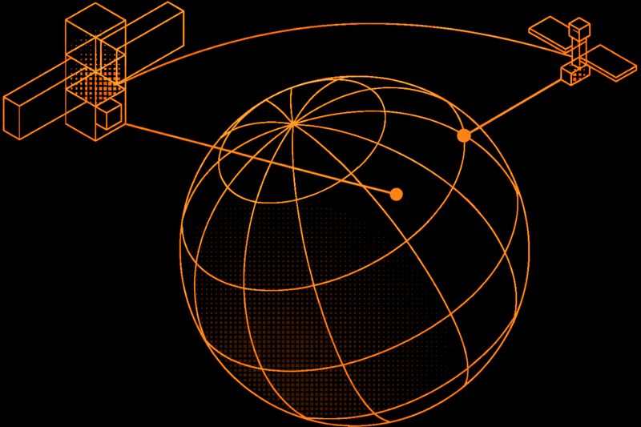
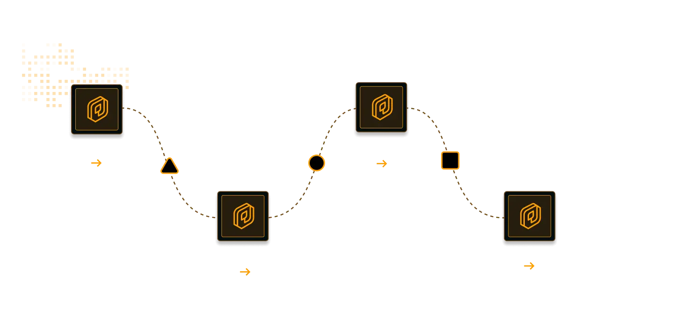
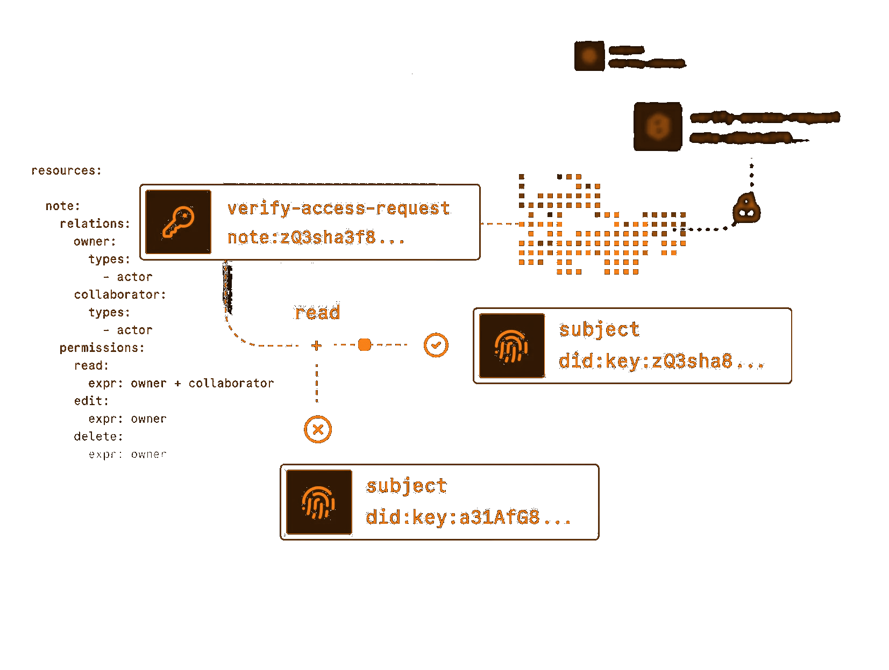
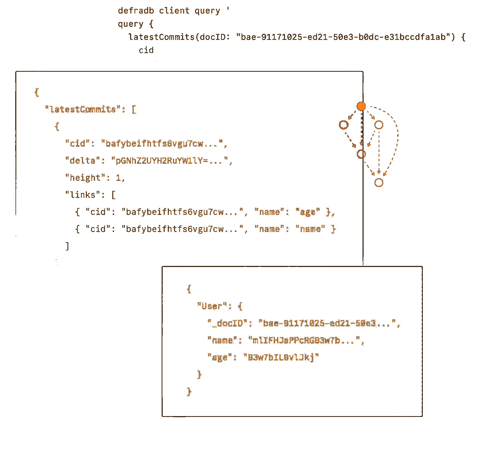
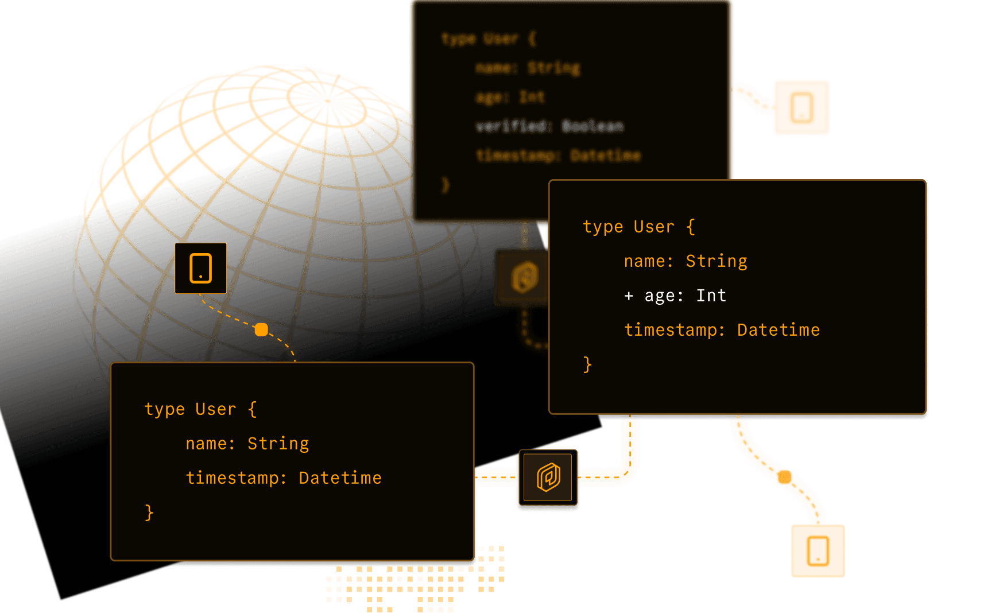

When the internet goes down, most apps stop working. Geogram keeps going. Direct device-to-device communication without servers, accounts, or infrastructure you don't control.

Geogram connects people directly - phone to phone, laptop to laptop - without requiring infrastructure you don't control. Messages hop between devices over whatever path works: WiFi when available, Bluetooth when it's not, internet when you want global reach.

Edit spreadsheets, documents, presentations, and forms entirely offline. Real-time collaboration syncs automatically when connectivity is available. All your data stays on your devices - no cloud storage, no subscriptions, no data harvesting.
Publish blog posts from your phone to your local community or the world. No hosting required, no monthly fees. Your posts sync to nearby devices and become accessible through any connected relay.

Your phone can be a server. Your laptop can be a server. That old Raspberry Pi collecting dust can be a server. Geogram runs station software on any device, turning personal hardware into community infrastructure. Nothing lives on someone else's cloud.

For dedicated station hardware, Geogram provides firmware for ESP32 microcontrollers. Buy the components yourself and build a station that runs continuously on minimal power, serving as an always-on infrastructure node for your community network.
No computer needed. Connect your ESP32 or Quansheng radio to your Android phone and flash firmware directly. Built-in USB drivers, automatic device detection, and real-time progress tracking.

Geogram includes worldwide satellite imagery and street maps that work without internet. Pan and zoom anywhere on the planet using cached tiles stored locally on your device or synced from a nearby station.
A suite of apps designed for information sharing and coordination. Each stores data in human-readable formats that sync between devices through any available transport.
Real-time messaging with room-based channels and direct messages. Supports file attachments, voice messages, location sharing, and polls. Works across all connection types.
Long-form publishing with markdown content, drafts, tags, and comments. Create local journalism and community newsletters that work entirely offline.
Offline Google Docs alternative. Spreadsheets, documents, presentations, and forms with real-time collaboration when connected.
Community calendars with event details, locations, media galleries, and participant tracking. Perfect for organizing gatherings and mutual aid distributions.
Geographic points of interest with descriptions and photos. Document water sources, shelter locations, supply caches, or hazards without commercial mapping services.
Geographic alert system with severity classification and community verification. Track hazards from open through resolution with photographic proof.
Asset tracking with 200+ item types for off-grid contexts. Track borrowing, usage, expiration dates. Organize up to 5 levels deep with group sharing.
Track debts and IOUs with cryptographic receipts. Multi-currency support including time. Optional witness signatures for agreements.
Unified download and upload management. Resume capability for interrupted transfers and patient mode that waits up to 30 days for offline peers.
Offline AI assistant using local GGUF models. Provides Q&A, content moderation, semantic search, and voice transcription through Whisper.
Offline content library. RSS feeds, manga with CBZ support, ebooks (EPUB, PDF, TXT). All content cached locally with progress tracking.
Flash ESP32 and Quansheng radios directly from your phone. No computer or external tools needed.
Offline P2P games: Poker, Blackjack, Rommé, Math Challenge. Play via Bluetooth with nearby devices. NOSTR-signed results prevent cheating.
Threaded discussions organized by sections and topics. Persistent, searchable archives of community knowledge with quoting and attachments.
Decentralized commerce with shops, inventory, orders, and verified reviews. Peer-to-peer transactions without payment processors.
Sneakernet message delivery through physical carrier chains. Messages travel via carriers who stamp them with cryptographic proof.
Everything runs locally. No cloud APIs, no external services, no "phone home" behavior.
Offline location lookup using DB-IP MMDB database. No external queries.
ONNX Runtime, TensorFlow Lite, and LLaVA models for on-device inference.
libmpv for video and audio playback. Music generation works offline too.
Peer-to-peer connections without relay servers. Direct device-to-device.
Offline speech recognition from tiny to large-v2 models. Voice input anywhere.
Cryptographic identity verification across all apps. Tamper-proof content.
A single codebase for all major platforms. Same data formats, seamless syncing between devices.
Get the latest release for your platform. All downloads are verified and signed.
Can't find what you need? View all releases on GitHub
A larger download that works anywhere, requires no accounts, makes no network requests you didn't initiate, and can't be degraded by a company changing their API terms.